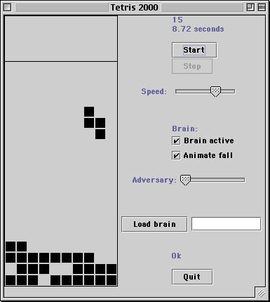

Stanford Tetris Project
This package of material provides a foundation for some fun Java tetris
projects. The design uses Piece and Board classes to build the tetris core,
and there are Brain classes to add in game playing AI.
-
Readme.txt -- introduction to the tetris materials
and how to use them
-
JTetris.jar -- a runnable version of tetris with
a built-in rudimentary brain. The brain can play tetris without a human
player, or it can drive the "adversary" feature that uses the brain to
pick especially bad pieces for the player (hah!).
-
MacJTetris.sit -- JTetris.jar wrapped in a
way to run on MacOS 8/9 -- see the readme for instructions
-
Tetris-Architecture.html -- an introduction
to the overall design architecture of the tetris classes
-
Instructors-Guide.html -- a discussion
of the tetris project for instructors
-
TetrisAssignment.pdf -- the assignment
handout we use with our 2nd year CS undergradates to implement tetris
-
TetrisAssignment.rtf -- same as above,
but rtf format
-
TetrisStarter.zip -- .java files to get
started. The support files are already done (Brain.java, JBoardTest.java,
etc.), while the core files like Piece.java and Board.java have the prototypes
filled in, but the code is not done.
This project was presented as one of the assignments in the Nifty
Assignments Panel at SIG-CSE 2001 -- check out that site for more neat
assignments.
Cheers,
Nick Parlante
Return to the Stanford CS Ed
Library